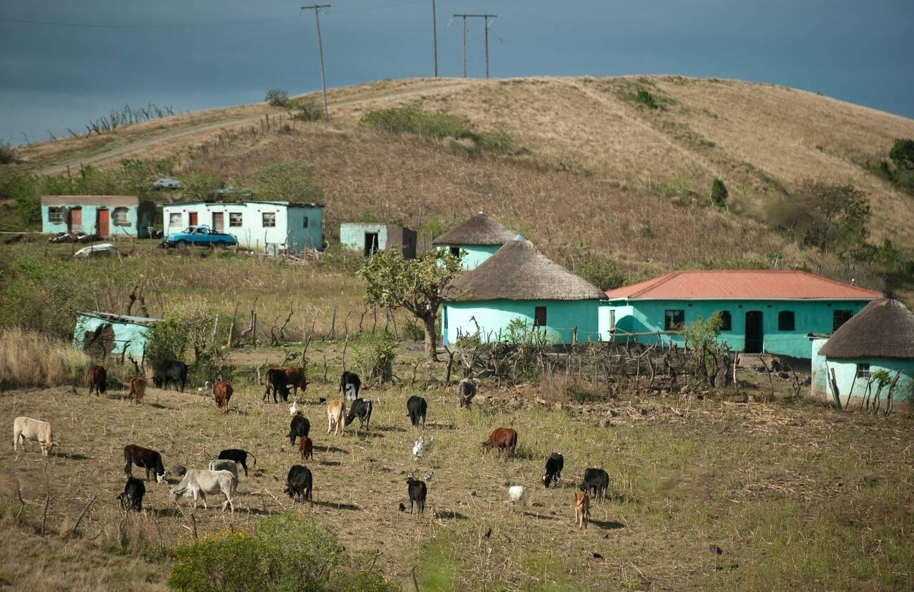
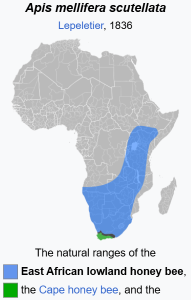

The scripture say that the Israelites took the land that the descendants of Canaan lived in, Canaan was a
son of Ham / Cham / Kemet / Kemi
Judah’s totem is a lion (still is for the Mandinka and Ewe hence why it means lion in their languages) which has been appropriated by
European royal dynasties since the fall of Israel. This is why
there is a greek letter of a cross called “Tau” which means
lion in Sepedi and related languages because the Koine
Greek script itself was made in Alexandria, Egypt and their
writing systems are based on the original true symbols that have since been
manipulated. This is why one of the kings associated with the "Egyptian Empire" is called “Seqenenre Tao” meaning "The brave", the Egyptians had tamed Cheetahs thats were symbolicaly signicant during this period. The Cheetahs were from Judah.
The letter “J” is one of many recent inventions (1500s) to distort the truth.

The land of Canaan is described as being a land flowing
with “milk and honey” in Exodus 3:8t.
This is the range of the African honeybees:
Wikipedia will tell you:
“In terms of industrial honey
production, in its natural habitat and
the neo-tropics, the African bee
produces far more honey than its
European counterparts. It is unclear
if this is due to a superior nectar
gathering ability, lack of adaptability
in the European honey bees for
tropical environment, or both”
Arguably
the best cattle, the “Sanga Cattle”
and associated breeds are found in
the
same region. This is why
Americans imported the cattle
decades ago and set up a breeding society to create their
modern “Ankole-Watusi” one of which holds the record for
the largest horns of any cattle.
lions, leopards, rhinoceros(which is a unicorn) all mentioned
in scripture, then they will say there used to be all these
animals in the fake Israel and somehow they magically
disappeared, the same way the entire jewish nation
magically disappeared from Palestine, then they will use the
US/De Beers/Merchant funded wealth to try to convince you
that their land is blessed, they tried “reintroducing” ostriches
there but surprise surprise the population could not survive
in a random desert.
Where are the giraffes? Roman bibles had to translate
giraffe as “Camelopardalis” this is why in Afrikaans they still
say “kameelperd” as giraffe.
The Sycamore Fig Trees which have biblical significance is
found all over Africa, and is known as “mugumo” by the
Kikuyu who still associate it closely with the true god and
their culture. Acacia trees are mentioned throughout the bible. These are
acacia trees, they want you to believe these are somehow
associated with the fake israel. The Solanum Incanum (Solomon in Canaan)
is grown around Kenya and was called Jew's Apple by the merchants.
Moses did not cross a red sea, he went though a "Sea of reeds" based on the orignal Hebrew i.e a marsh. This was approximately what
the greeks remamed "Lake Ptolemy" in Northwest Sudan. The South was viewed as Up during the era of Moses and Ancient Egypt, thats why Lower Egypt is in the North and the oldest Arabic maps were "upside down".